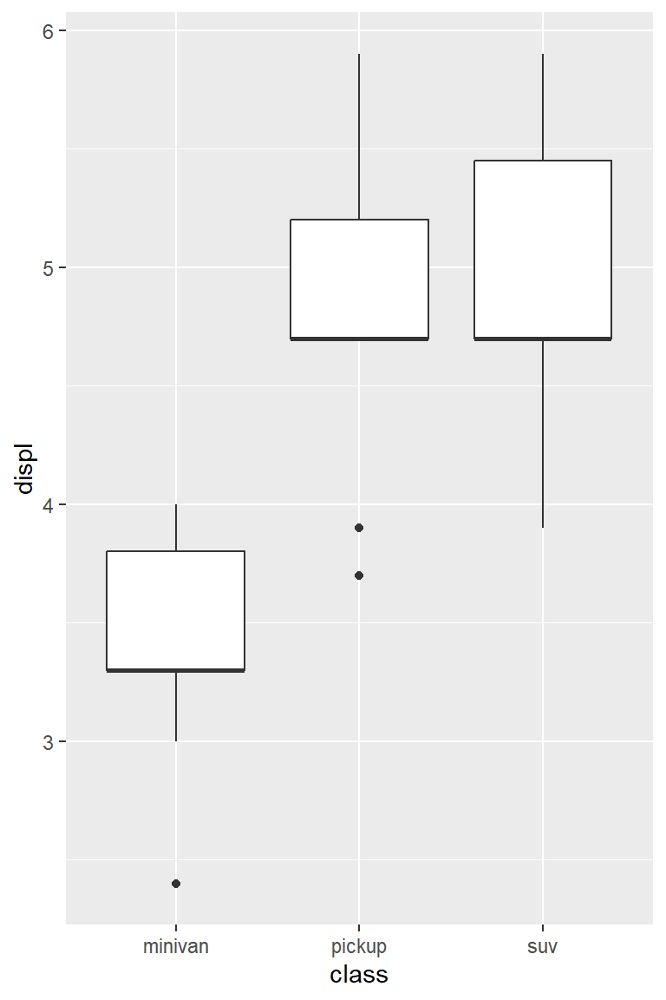

Example 1 What types of vehicles did dodge produce from the mpg data?
Syntax Comparison: Base R vs Tidyverse
Example 1 What types of vehicles did dodge produce from the mpg data?
Base R syntax
unique(mpg[mpg$manufacturer =="dodge", "class"])#> # A tibble: 3 × 1#> class #> <chr> #> 1 minivan#> 2 pickup #> 3 suv
Fine, but a little awkward.
Tidyverse syntax
mpg %>%filter(manufacturer =="dodge") %>%distinct(class) #> # A tibble: 3 × 1#> class #> <chr> #> 1 minivan#> 2 pickup #> 3 suv
Much, much nicer.
Tidyverse Syntax and Pipe Operator
The pipe operator%>% is used to build the pipeline.
You could interpret %>% as then
Passes result on left into first argument of function on right.
Shortcut to type %>%
%>% has to come at the end of the line, not the start.
Check Missing Values
mpg %>% dplyr::select(everything()) %>%# use everything() to select all variablessummarize_all(~sum(is.na(.))) # summarize_all() affects every variable#> # A tibble: 1 × 11#> manufacturer model displ year cyl trans drv cty hwy fl class#> <int> <int> <int> <int> <int> <int> <int> <int> <int> <int> <int>#> 1 0 0 0 0 0 0 0 0 0 0 0
Wrangling & Graphing in Tidyverse
Chain the tidyverse pipeline into the ggplot function.
Example 2
Draw boxplots of engine displacement (variable displ in mpg) for three vehicle types of dodge.
mpg %>%### Data wrangling partfilter(manufacturer =="dodge") %>%ggplot(aes(x = class, y = displ)) +### Data visualization partgeom_boxplot()

Or equivalently,
### Data wrangling part mpg_dodge <- mpg %>%filter(manufacturer =="dodge")### Data visualization part ggplot(mpg_dodge, aes(x = class, y = displ)) +geom_boxplot()
Tibbles
tidyverse mainly deals with tibble instead of data.frame. Therefore this is where we start.
tibble is a data.frame with different attributes and requirements. The package tibble provides support for tibble. It is included in tidyverse.
Tibble vs Data Frame
Tibbles are enhanced data frames.
Tibbles are a table format provided by the tibble package, part of the core tidyverse.
Make working in the tidyverse a little easier.
We will compare tibble and data frame on the following aspects:
Creating
Coercion (i.e. data frame \(\longleftrightarrow\) tibble)
Difference in printing
Difference in subsetting
Difference in recycling rules
Difference in accepting row names
Tibble vs Data Frame – Creating (Import a CSV File)
df_workshop#> Name Gender Email.Address#> 1 Dwayne Johnson M Djohnson@illinois.edu#> 2 Rihanna F Rihanna@illinois.edu#> 3 Ellen DeGeneres F Edegeneres@illinois.edu#> 4 Will Smith M Wsmith@illinois.edu#> 5 Angelina Jolie F Ajolie@illinois.edu#> 6 Cristiano Ronaldo M Cronaldo@illinois.edu#> 7 Leonardo DiCaprio M Ldicaprio@illinois.edu#> 8 Tom Cruise M Tcruise@illinois.edu#> 9 Robert Downey Jr. M RDowneyJr@illinois.edu#> 10 Celine Dion F Cdion@illinois.edu#> 11 Adele F Adele@illinois.edu#> 12 Serena Williams F Swilliams@illinois.edu#> 13 Lionel Messi M Lmessi@illinois.edu#> 14 Taylor Swift F Tswift@illinois.edu#> 15 J. K. Rowling F JKRowling@illinois.edu#> 16 LeBron James M Ljames@illinois.edu#> Department Info.Source Class.Year#> 1 Statistics Email Undergraduate#> 2 Economics Class Graduate#> 3 Biology Email Undergraduate#> 4 Electrical and Computer Engineering Email Undergraduate#> 5 Computer Science Class Undergraduate#> 6 Economics Friends/Colleagues Faculty and staff#> 7 Economics Email Undergraduate#> 8 Mathematics Class Undergraduate#> 9 mechanical Science and Engineering Class Undergraduate#> 10 Biology Friends/Colleagues Faculty and staff#> 11 Statistics Class Undergraduate#> 12 Computer Science Email Undergraduate#> 13 Biology Professor Graduate#> 14 BIology Flyer Undergraduate#> 15 Finance Email Undergraduate#> 16 Electrical and Computer Engineering Flyer Undergraduate#> Major Related.Courses.Taken#> 1 Statistics STAT 207, MATH 220#> 2 ECON BUS 201, MATH 426#> 3 Biology STAT 207#> 4 Electrical Engineering MATH 221, MATH 220#> 5 Computer Science CS 173, CS 411, CS 210 #> 6 <NA> <NA>#> 7 Economics BUS 201, MATH 426, STAT 425#> 8 Mathematics MATH 227, STAT 207, STAT 425#> 9 Mechanical Engineering MATH 220, STAT 425#> 10 <NA> <NA>#> 11 Statistics MATH 220, MATH 426, STAT 425#> 12 Computer Science CS 225, CS 173#> 13 Biology MATH 257#> 14 Biology MATH 257, MATH 426#> 15 Finance BUS 302, BUS 201#> 16 EE MATH 227, STAT 425#> Programming.Language.Known Willingness.to.be.the.Presenter#> 1 R, SAS, Matlab Y#> 2 Python, SAS N#> 3 R, Python N#> 4 R, Python, SQL Y#> 5 Python, SAS Y#> 6 <NA> <NA>#> 7 Java, C++, HTML, Matlab N#> 8 Matlab N#> 9 Matlab, Python Y#> 10 <NA> <NA>#> 11 R, Python, Matlab Y#> 12 R, Python Y#> 13 C++, JAVA N#> 14 Python Y#> 15 R, Hadoop, SAS N#> 16 Matlab N#> DS.Years.of.Experience#> 1 1.0#> 2 1.0#> 3 0.0#> 4 0.0#> 5 1.0#> 6 NA#> 7 2.0#> 8 0.5#> 9 0.5#> 10 NA#> 11 1.0#> 12 0.5#> 13 2.0#> 14 0.0#> 15 1.5#> 16 0.5
Tibble
tbl_workshop#> # A tibble: 16 × 11#> Name Gender `Email Address` Department `Info Source` `Class Year` Major#> <chr> <chr> <chr> <chr> <chr> <chr> <chr>#> 1 Dwayne Jo… M Djohnson@illin… Statistics Email Undergradua… Stat…#> 2 Rihanna F Rihanna@illino… Economics Class Graduate ECON #> 3 Ellen DeG… F Edegeneres@ill… Biology Email Undergradua… Biol…#> 4 Will Smith M Wsmith@illinoi… Electrica… Email Undergradua… Elec…#> 5 Angelina … F Ajolie@illinoi… Computer … Class Undergradua… Comp…#> 6 Cristiano… M Cronaldo@illin… Economics Friends/Coll… Faculty and… <NA> #> 7 Leonardo … M Ldicaprio@illi… Economics Email Undergradua… Econ…#> 8 Tom Cruise M Tcruise@illino… Mathemati… Class Undergradua… Math…#> 9 Robert Do… M RDowneyJr@illi… mechanica… Class Undergradua… Mech…#> 10 Celine Di… F Cdion@illinois… Biology Friends/Coll… Faculty and… <NA> #> 11 Adele F Adele@illinois… Statistics Class Undergradua… Stat…#> 12 Serena Wi… F Swilliams@illi… Computer … Email Undergradua… Comp…#> 13 Lionel Me… M Lmessi@illinoi… Biology Professor Graduate Biol…#> 14 Taylor Sw… F Tswift@illinoi… BIology Flyer Undergradua… Biol…#> 15 J. K. Row… F JKRowling@illi… Finance Email Undergradua… Fina…#> 16 LeBron Ja… M Ljames@illinoi… Electrica… Flyer Undergradua… EE #> # ℹ 4 more variables: `Related Courses Taken` <chr>,#> # `Programming Language Known` <chr>,#> # `Willingness to be the Presenter` <chr>, `DS Years of Experience` <dbl>
Data frames – recycling rule is applied automatically
data.frame(x =1:6, y ="STAT")#> x y#> 1 1 STAT#> 2 2 STAT#> 3 3 STAT#> 4 4 STAT#> 5 5 STAT#> 6 6 STATdata.frame(x =1:6, y ="STAT", z =c("Y", "N"))#> x y z#> 1 1 STAT Y#> 2 2 STAT N#> 3 3 STAT Y#> 4 4 STAT N#> 5 5 STAT Y#> 6 6 STAT N
Tibble – only values of length 1 are recycled
tibble(x =1:6, y ="STAT")#> # A tibble: 6 × 2#> x y #> <int> <chr>#> 1 1 STAT #> 2 2 STAT #> 3 3 STAT #> 4 4 STAT #> 5 5 STAT #> 6 6 STATtibble(x =1:6, y ="STAT", z =c("Y", "N"))#> Error in `tibble()`:#> ! Tibble columns must have compatible sizes.#> • Size 6: Existing data.#> • Size 2: Column `z`.#> ℹ Only values of size one are recycled.# Correctiontibble(x =1:6, y ="STAT", z =rep(c("Y", "N"), times =3))#> # A tibble: 6 × 3#> x y z #> <int> <chr> <chr>#> 1 1 STAT Y #> 2 2 STAT N #> 3 3 STAT Y #> 4 4 STAT N #> 5 5 STAT Y #> 6 6 STAT N
Tibble vs Data Frame – Row Names
Data frames accept assigned row names
rownames(df_workshop) <- letters[1:16]head(df_workshop)#> Name Gender Email.Address#> a Dwayne Johnson M Djohnson@illinois.edu#> b Rihanna F Rihanna@illinois.edu#> c Ellen DeGeneres F Edegeneres@illinois.edu#> d Will Smith M Wsmith@illinois.edu#> e Angelina Jolie F Ajolie@illinois.edu#> f Cristiano Ronaldo M Cronaldo@illinois.edu#> Department Info.Source Class.Year#> a Statistics Email Undergraduate#> b Economics Class Graduate#> c Biology Email Undergraduate#> d Electrical and Computer Engineering Email Undergraduate#> e Computer Science Class Undergraduate#> f Economics Friends/Colleagues Faculty and staff#> Major Related.Courses.Taken Programming.Language.Known#> a Statistics STAT 207, MATH 220 R, SAS, Matlab#> b ECON BUS 201, MATH 426 Python, SAS#> c Biology STAT 207 R, Python#> d Electrical Engineering MATH 221, MATH 220 R, Python, SQL#> e Computer Science CS 173, CS 411, CS 210 Python, SAS#> f <NA> <NA> <NA>#> Willingness.to.be.the.Presenter DS.Years.of.Experience#> a Y 1#> b N 1#> c N 0#> d Y 0#> e Y 1#> f <NA> NA
Tibbles don’t accept assigned row names
rownames(tbl_workshop) <- letters[1:16]
More motivation
The tidyverse has become the industry-standard in the R-using data science community.
The tidyverse in R is comparable to the numpy and pandas packages in Python.
Reference
Reference books
R for Data Science: https://r4ds.hadley.nz/
Hands-on Programming with R: https://rstudio-education.github.io/hopr/
R Graphics Cookbook: https://r-graphics.org/
Statistical Inference via Data Science: A Modern Dive into R and the Tidyverse, by Chester Ismay, Albert Y. Kim